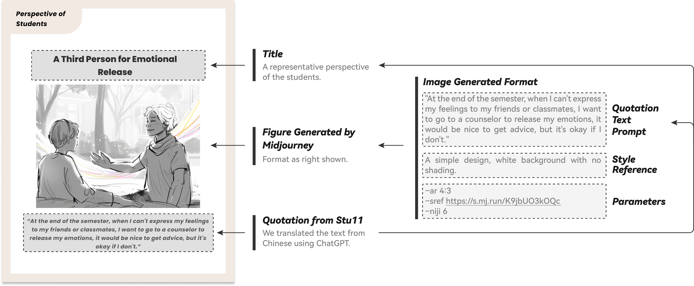

← BACK TO PROJECTS

"It Seems Every Word They Say Has a Purpose": A Social-technical Perspective to Understand the Dynamics between University Students and Mental Health Professionals
Publication: In Proceedings of CSCW 2026. DOI: https://dl.acm.org/doi/10.1145/3788061
Abstract: HCI technologies are increasingly used to promote the wellbeing of young people. While mental health professionals are significant resources to support young people in dealing with mental health challenges, little research has explored the distinctive perspectives between young people and professionals and how technology can be designed to navigate the tensions between them. To fill this gap, we conducted a two-stage study consisting of semi-structured interviews and a co-design workshop with university students and mental health professionals. Findings from the interviews revealed convergent and divergent perspectives between these two groups on the factors that motivate or discourage young people from seeking help from the professionals. In the workshop, insights of the interviews were further distilled into a set of card-based tools to facilitate shared understanding and collaboration between these two groups as they envisioned future technologies that address the interests and concerns of two groups. Our work contributes to ongoing discussions in HCI about how emerging technologies can be designed to promote shared understanding between these two groups and enable technology-mediated mental healthcare tailored to individual needs and institutional contexts.
Keywords: Qualitative study, Interview study, Codesign, Mental health, Mental Health Professionals, Young People
